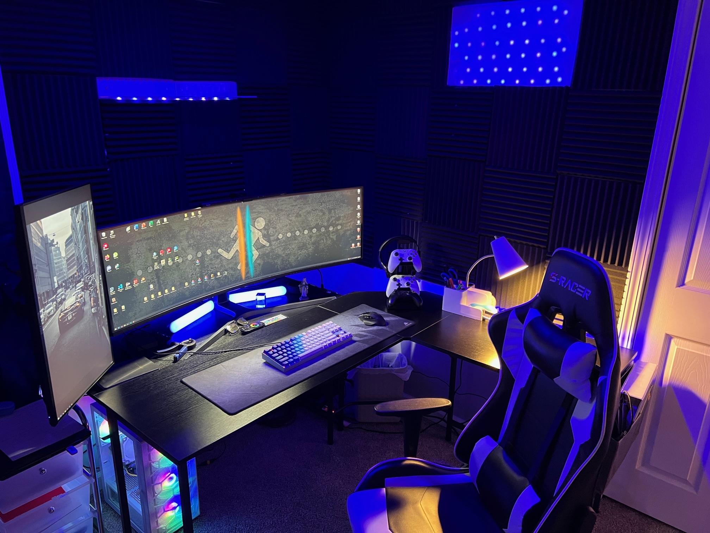

Computer Science &
Mathematics Student
Cybersecurity Specialist
Alvaro Leon Parra
Portfolio
About me
01Professional Summary
Highly motivated and detail-oriented computer science and mathematics senior with a concentration in cybersecurity. Pursuing a challenging and rewarding IT position that will lead into the cybersecurity field. Possess a passion for problem-solving and a strong foundation in algorithms, data structures, and software design. Proficient in Scripting languages, Java, and C++, with experience in web development, databases, networking, automation and scripting.
Proficiencies
Programming Languages: Java, C++, Phyton, Bash Scripting, JavaScript, PHP, HTML and CSS. Software: Eclipse, NetBeans, Dev++, Visual Studio, MS Office, MS Outlook, MySQL, Blender, Nmap, Metasploit Framework, Wireshark, Air crack-ng, Burp Suite, SQL map, John the Ripper. Systems: Experience working with Linux/ Windows/ IOS and virtualized/physical server environments, Creating Network Infrastructure. Security: Vulnerability-scanning, Design and understanding of Server. Languages: English (Fluent), Spanish (Native Tongue), Italian (Intermediate), French (Intermediate). Communication, problem-solving, monitorization, customer service, observant, dedicated team member.
Projects
02Personal Website Project
Leveraging the capabilities of Blender, Shapr3D, Three.js, and React.js, I have meticulously designed and developed an immersive 3D web experience that represents a virtual reconstruction of my personal space. This project serves as a testament to my technical proficiency in blending cutting-edge web technologies with the art of digital design. It demonstrates the seamless integration of realistic 3D environments into interactive web applications, providing users with an engaging exploration of digitally crafted spaces. The initiative underscores my commitment to innovation and the synthesis of visual aesthetics with functional, user-centered design.
Scholarship Application Management System (FSFSA)
As part of a dynamic team comprising both tech and business students, we developed a Scholarship Management Portal for [Fairmont State University]'s Financial Aid Department. This capstone project brought together the analytical acumen of business majors with the technical expertise of computer science students. Hosted on an EC2 Linux instance for robust performance, the portal features a React.js-driven frontend, offering a user-friendly interface for efficient scholarship application processing. The backend is supported by a MySQL database on a Linux server, providing a secure and systematic approach to data handling. Our collaborative project has successfully automated and simplified the scholarship administration process, ensuring a more accessible and organized system for the department and student applicants alike.

Cybersecurity Infrastructure Development and Penetration Testing Capstone Project
In this capstone project, I independently designed and implemented a secure server infrastructure using Ubuntu, coupled with Apache2, MySQL, and PHP for comprehensive web services. A pivotal component of my project was establishing an SMTP server, ingeniously configured to capture login credentials during user authentication attempts. This feature was instrumental in my penetration testing strategy, allowing me to simulate real-world attack scenarios and evaluate the server's response to unauthorized access attempts. Throughout the project, I meticulously configured SSL certificates to enhance communication security and applied a suite of cybersecurity tools, including Nmap and WFuzz, for vulnerability assessment. My efforts culminated in a robust server setup that not only met operational requirements but also exhibited resilience against common cybersecurity threats. The project underscored the critical importance of continuous security monitoring and the proactive management of vulnerabilities in maintaining the integrity of networked systems.
Explore My Diverse Portfolio on GitHub
For a comprehensive view of my technical proficiency and creativity across a spectrum of technologies and programming languages, I invite you to explore my GitHub portfolio. My projects showcase a broad range of skills, from developing applications in Java and C++ to crafting mathematical proofs in LaTeX and managing databases with MySQL. Each project is a testament to my dedication to mastering the complexities of computer science and my continuous pursuit of challenging the boundaries of technology.